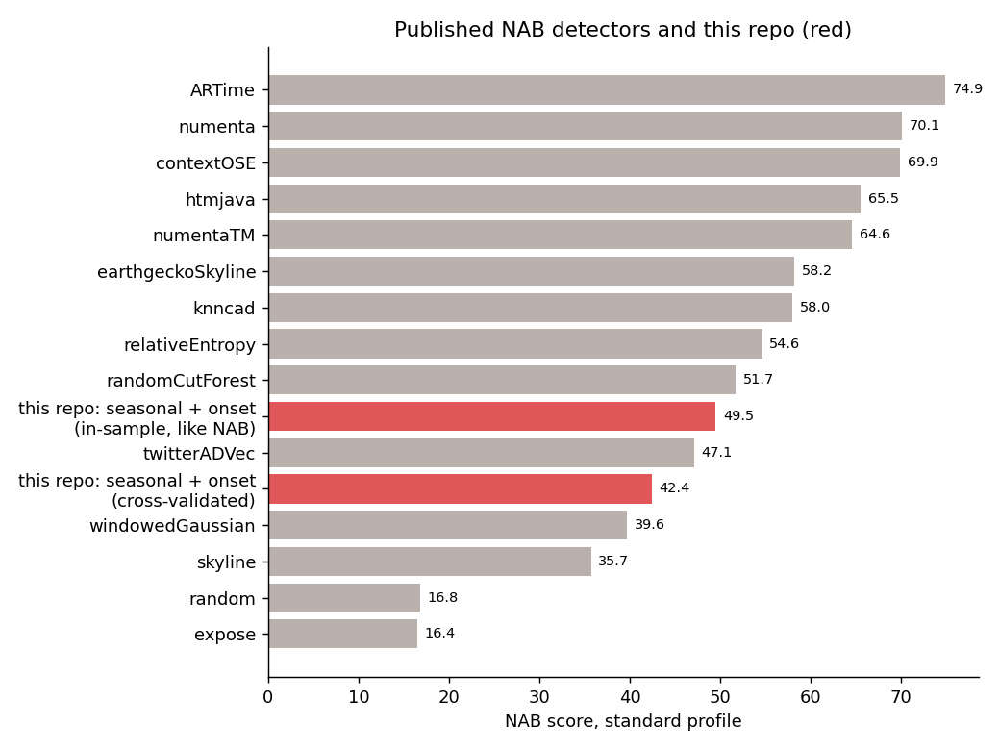
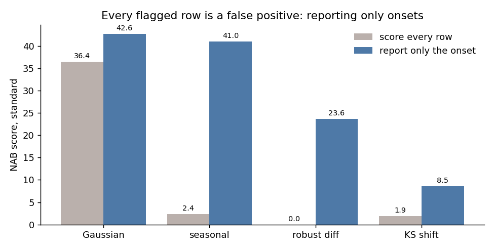
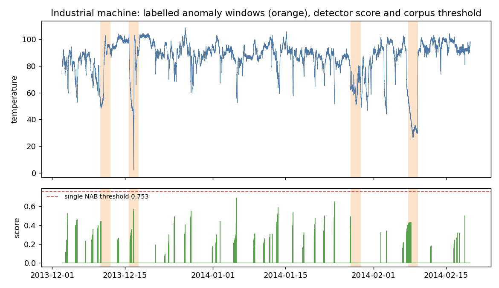

58 real and artificial sensor and server series from the Numenta Anomaly Benchmark, scored with a rule built for monitoring: detect online, detect early, and pay for every false alarm. A validated scorer, simple detectors, and an honest number.


